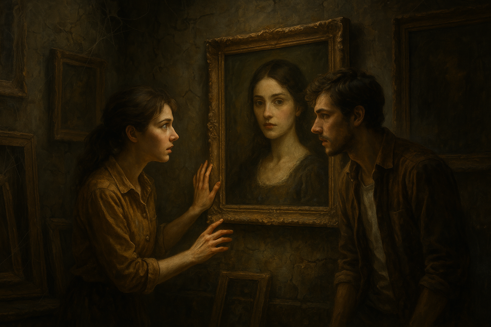

Елена и Марко, двамата млади художници, все по-близки благодарение на съвместния си проект, започнаха да прекарват все повече време заедно в малката и не толкова известна галерия, разположена накрая на града. Мястото бе странно привлекателно – стари стени, осеяни с паяжини, прашни рамки, забравени произведения на изкуството, които сякаш разказваха истории за времето, когато са били създадени. Въздухът бе тежък и миришеше на влага и старо дърво, но тази тайнствена атмосфера привличаше всеки, който бе готов да се потопи в мистиката на забравеното. Галерията беше място, което нямаше много посетители. Повечето от експонатите стояха в ъглите, забравени и занемарени. Елена и Марко обаче не спираха да търсят нови вдъхновения за своята предстояща експозиция. Един ден, след като разгледаха няколко произведения, неочаквано попаднаха на старо платно, което беше подредено на почти незабележимото място, за което никой друг не се беше интересувал. Картина изобразяваше младо момиче, което изглеждаше като оживяла фигура от друга епоха. Лицето ѝ беше осветено от мека светлина, а погледът ѝ – загадъчен и изпълнен с история. Това, което наистина привлече вниманието на Елена, беше поразителната прилика на жената върху картината с нея самата. Беше като поглед в огледало, което не можеше да бъде обяснено по обикновен начин. Боята беше избеляла и някои детайли бяха заличени от времето, но фигурата на жената беше нещо повече от случайно съвпадение. „Марко… погледни това! Това е невероятно“, прошепна тя, като с треперещи пръсти посочи картината. Марко, който не беше забелязал на първоначален поглед, се приближи и внимателно изучи образа на младата жена. „Наистина… Ти си като нейно копие“, каза той с неясно удивление в гласа си. „Мислиш ли, че това може да е случайност?“ Елена не беше сигурна. Почувства се сякаш влезе в нова, непозната реалност, където времето и пространството бяха преплетени. Чувството, което я обхвана, беше нещо необяснимо, като нещо повече от съвпадение. Защо картината изглеждаше толкова реална и защо тя приличаше толкова много на нея? Марко, който обикновено беше прагматичен и рационален, сега изглеждаше замислен. Въпреки че беше склонен да отхвърля всякакви мистични теории, това откритие го накара да се запита дали съществуват неща, които не могат да се обяснят с логика. „Мислиш ли, че съдбата ни води към нещо повече?“ попита той, оглеждайки картината, сякаш очакваше да намери отговори в нейните засъхнали цветове. Елена замълча и в този момент разбра, че не може да даде категоричен отговор. Тя усещаше нещо дълбоко в себе си, нещо, което не можеше да бъде обяснено с думи. Може би това наистина беше съдба. Може би техните пътища бяха водени от нещо по-силно и по-дълбоко. След този момент нещо в отношението между двамата се промени. Те започнаха да прекарват още повече време в галерията, изследвайки всяко произведение, търсейки улики и знаци, които да обяснят загадката на картината. Всяко посещение ги караше да се чувстват все по-свързани не само с мястото, но и с историята, която криеше. През следващите седмици Елена започна да сънува сънища за жената от картината. В сънищата си, тя усещаше, че тази жена е не само нейна предшественичка, но и някаква част от нея, която се е скрита в дълбините на времето. Сънищата ѝ бяха изпълнени с образи на мистериозни пейзажи, древни замъци и символи, които изглеждаха познати, но все пак неясни. Всеки сън оставяше нови въпроси в съзнанието ѝ. Елена и Марко започнаха да разпитват местните историци и галеристи за произхода на картината, но никой не знаеше нищо за нея. Изглеждаше, че тя беше изчезнала от историята, оставяйки след себе си само мъглива следа. Нещо в тяхната връзка, не само творческо, а и емоционално, започна да се променя. Всяко откритие, всяко ново разгадаване на тайната на картината ги караше да се чувстват все по-свързани, но същевременно и все по-отдалечени от реалността около тях. Тяхната търсене започваше да приема почти мистични измерения, като че ли времето беше спряло, а тяхната собствена история беше просто едно продължение на нещо много по-дълго и по-дълбоко. Един ден, когато вече бяха почти изгубили надежда да разберат повече, Елена откри още нещо важно. На гърба на картината, с малки, почти неразличими букви, беше написано: „Животът е пътуване, което се връща, когато е готово“. Беше сякаш ключът към всичко, което търсеха. От този момент нататък, всичко в техните животи започна да има ново значение, сякаш съдбата беше изпратила тази картина, за да им покаже пътя към нещо, което те още не можеха да разберат напълно. И така, всяко тяхно посещение в галерията ги водеше все по-близо до една неизречена истина, която беше по-голяма и по-сложна от всяко произведение на изкуството, което бяха виждали досега. Тайните на галерията постепенно започваха да се разкриват пред тях, но самата същност на загадката им оставаше неразгадаема. Тя беше нещо, което щеше да ги промени завинаги. 